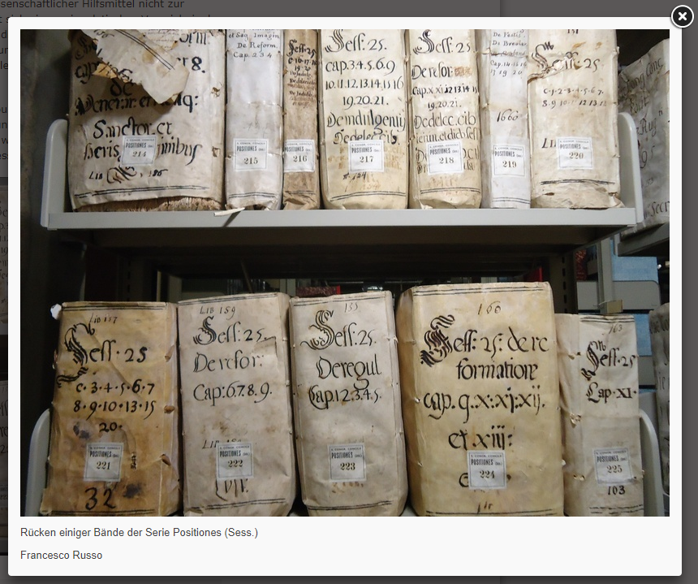
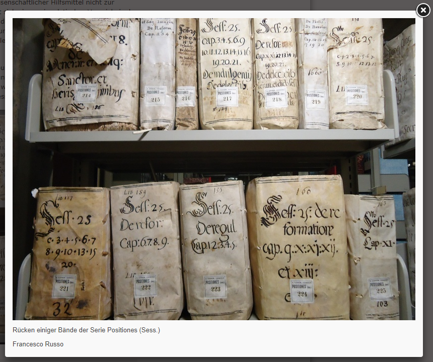

- Forschungsprojekt
"Die Regierung der Universalkirche nach dem Konzil von Trient" - Beispielquellen
- Aktuelle Datenhaltung
- Ungewissheiten
- (Vorläufiges) Datenmodell
- Ausblick
Church Governance after Trent
Max Planck Forschungsgruppe
Benedetta Albani
Konzilskongregation: Umsetzung und Interpretation der Konzilsbeschlüsse
 

- 1567-1681
- 17 Pontifikate
- 270 Bände Archivmaterialien
- > 33.000 Entscheidungen
- > 100 damit befasste Kardinäle
- 750 Diözesen
- Jede einzelne E. beschrieben durch >100 Felder
{kind=link}
{kind=link}
{kind=link}
{kind=link}
(Vorläufiges) Datenmodell
Verfahren
Ebene 1
Historisches Beratungsverfahren
- Case als zentral Entität, Hearings, Participants, Resolution, Matter. (Vgl. Wyner/Hoekstra 2012.)
- "Reale" Welt: Ideelle/konzeptuelle Welt, Normative Ordnung

{kind=link}
{kind=link}
Vielen Dank
Verweise
- Niccolucci, Franco / Sorin Hermon (2017): "Expressing reliability with CIDOC CRM", in: International Journal on Digital Libraries 18/4, pp. 281-287, doi:10.1007/s00799-016-0195-1.
- Ruymbeke, Muriel van / Pierre Hallot / Roland Billen (2017): "Enhancing CIDOC-CRM and compatible models with the concept of multiple interpretations", in: ISPRS Ann. Photogramm. Remote Sens. Spatial Inf. Sci., IV-2/W2, 287-294, doi:10.5194/isprs-annals-IV-2-W2-287-2017.
- Wyner, Adam / Rinke Hoekstra (2012): "A Legal Case OWL Ontology with an Instantiation of Popov v. Hayashi", in: Artificial Intelligence and Law. doi:10.1007/s10506-012-9119-6.
- Die Regierung der Universalkirche nach dem Konzil von Trient
Andreas Wagner
wagner@rg.mpg.de |
 @anwagnerdreas |
@anwagnerdreas |
 awagner-mainz
awagner-mainz
Tel: 069 / 789 78 - 107
Präsentation erstellt unter Verwendung von impress.js und SimpleDiagrams,
online ansehen unter https://awagner-mainz.github.io/Ambiguity-Mainz-2018-01/.